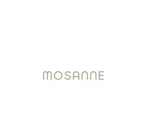

Trade Mark Journal No.2025/032 8 August 2025
UK00004241787 30 July 2025 (3,35,44)

- Class 3
- Skincare cosmetics; Cosmetics; Moisturisers [cosmetics]; Anti-aging moisturizers used as cosmetics; Suncare lotions [for cosmetic use]; Skin moisturizers used as cosmetics; After-sun oils [cosmetics]; Beauty care cosmetics; Facial creams [cosmetics]; Non-medicated cosmetics; Cosmetic moisturisers; Organic cosmetics; Skin care cosmetics; Body creams [cosmetics]; Beauty lotions; After-sun lotions [for cosmetic use]; Skin fresheners [cosmetics]; Anti-aging skincare preparations; Hair cosmetics; Cosmetic creams and lotions; After-sun milk [cosmetics]; After-sun milks [cosmetics]; Moisturising skin lotions [cosmetic]; Cosmetics and cosmetic preparations; Anti-ageing creams [for cosmetic use]; Skin care lotions [cosmetic]; Skin recovery creams [cosmetics]; Tanning oils [cosmetics]; Suncare lotions; Anti-aging creams [for cosmetic use]; Self-tanning preparations [cosmetics]; Skin masks [cosmetics]; Hair care lotions [for cosmetic use]; Cosmetic products in the form of aerosols for skincare; Natural cosmetics; Tanning gels [cosmetics]; Cosmetic hair lotions; Cosmetics in the form of lotions; Skin cleansers [cosmetic]; Cosmetics for eye-lashes; Cosmetics for suntanning; Lip cosmetics; Suntan lotion [cosmetics]; Cosmetic nourishing creams; Sunscreen creams [for cosmetic use]; Body and facial creams [cosmetics]; Acne cleansers, cosmetic; Night creams [cosmetics]; Make-up palettes containing cosmetics; Fluid creams [cosmetics]; Tanning milks [cosmetics]; Mousses [cosmetics]; Skin balms [cosmetic]; Facial gels [cosmetics]; Skin care creams [cosmetic]; Cosmetic creams for skin care; Nail cosmetics; Moisturising skin creams [cosmetic]; Skincare preparations; Hair care creams [for cosmetic use]; Non-medicated cosmetics and toiletry preparations; Cosmetics for use on the skin; Anti-wrinkle creams [for cosmetic use]; Milks [cosmetics]; Skin creams [cosmetic]; Skin creams [for cosmetic use]; Cosmetic creams for the skin; Tanning preparations [cosmetics]; Cosmetic facial lotions; Facial lotions [cosmetic]; Creams (Cosmetic -); Cosmetic creams; Bath powder [cosmetics]; Facial moisturisers [cosmetic]; Suntan oils [cosmetics]; Cosmetic products for the shower; Sun care lotions [for cosmetic use]; Cleansing creams [cosmetic]; Body care cosmetics; Beauty serums; Colour cosmetics for the skin; Eyebrow cosmetics; Cosmetics preparations; Sunscreens [for cosmetic use]; Colour cosmetics; Beauty creams; Cosmetics in the form of creams; Cosmetic suntan lotions; Emollient preparations [cosmetics]; Cosmetic soaps; Sun protecting creams [cosmetics]; Eye cosmetics; Non-medicated skincare preparations; Anti-aging moisturizers; Suntanning oil [cosmetics]; Cosmetics for eye-brows; Multifunctional cosmetics; Sunscreen [for cosmetic use]; Anti-ageing serums for cosmetic purposes; Facial cleansers [cosmetic]; Beauty balm creams; Cosmetic massage creams; Skin care oils [cosmetic]; Cosmetics for the use on the hair; Sun-tanning preparations [cosmetics]; Body gels [cosmetics]; Facial creams [cosmetic]; Facial creams [for cosmetic use]; Decorative cosmetics; Cosmetic skin fresheners; Smoothing emulsions [cosmetics]; Skin lotions; Lotions for the skin; Humectant preparations [cosmetics]; Cosmetics for use in the treatment of wrinkled skin; Self tanning lotions [cosmetic]; Styling lotions; Anti-aging creams; Anti-ageing creams; Moisturising body lotion [cosmetic]; Beauty serums with anti-ageing properties; Cosmetic sun milk lotions.
- Class 35
- Online retail store services relating to cosmetic and beauty products; Online retail services relating to cosmetics; Mail order retail services for cosmetics; Online ordering services; Business management of wholesale and retail outlets; Providing online marketplaces for sellers of goods and or services; Administration of the business affairs of retail stores; Retail services in relation to toiletries; Business management of retail outlets; Retail services in relation to hair products; Provision of an online marketplace for buyers and sellers of goods and services; Advertising services for the promotion of e-commerce; Marketing research in the fields of cosmetics, perfumery and beauty products; Commercial information and advice services for consumers in the field of beauty products; Advertising services relating to cosmetics; Retail services in relation to beauty implements for humans.
- Class 44
- Beauty spa services; Beauty care services; Beauty salon services; Salon services (Beauty -); Hygienic and beauty care services; Beauty consultancy services; Beauty treatment services; Beauty therapy services; Haircare services; Beauty consultation services; Facial beauty treatment services; Services of a hair and beauty salon; Beauty advisory services; Beauty care services provided by a health spa; Provision of hygienic and beauty care services; Beauty care; Beauty information services; Beauty consultancy; Cosmetic make-up services; Skin care salon services; Make-up services; Consultancy services relating to beauty; Cosmetics consultancy services; Beauty treatment services especially for eyelashes; Consultation services relating to beauty care; Advisory services relating to beauty care; Hygienic and beauty care; Health spa services; Cosmetic body care services; Beauty salons; Salons (Beauty -); Spa services; Dermatology services; Beauty counselling; Services for the care of the skin; Beauty treatment; Advisory services relating to beauty treatment; Microdermabrasion services; Cosmetic body care services provided by health spas; Slimming salon services; Advisory services relating to beauty; Services for the care of the hair; Hair care services; Aromatherapy services; Cosmetician services; Aesthetician services; Consultancy in the field of body and beauty care; Human hygiene and beauty care; Beauticians (Services of -); Rental of equipment for human hygiene and beauty care; Beauty consultation; Medical spa services; Beautician services; Providing information relating to beauty salon services; Consultancy services relating to cosmetics; Hairdressing services; Hygienic and beauty care for animals; Cosmetic facial and body treatment services; Salon services (Hairdressing -); Hairdressing salon services; Manicure services; Hair salon services; Services of a make-up artist; Beauty therapy treatments; Hair salon services for women; Hair styling services; Micropigmentation services; Services for the care of the scalp; Pedicure services; Laser skin rejuvenation services; Nail care services; Make-up application services; Sun tanning salon services; Tanning (Sun -) salon services; Advisory services relating to cosmetics; Beauty care of feet; Facial treatment services; Hygienic and beauty care for humans; Hair salon services for men; Hair treatment services; Skin care salons.
Morufat Omosan